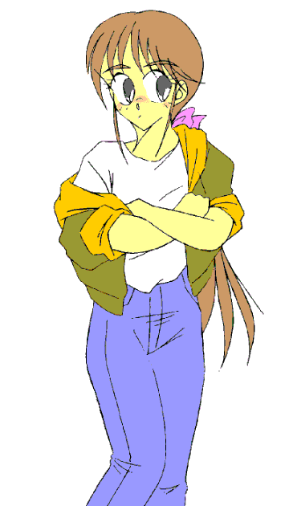

——華代ちゃんシリーズ・番外編——
（ハンター・シリーズ０６）
いちごちゃん・シリーズ０２
「いちごちゃんおしゃれ！」
※ 「華代ちゃん」シリーズの詳細については、以下の公式ページを参照にしてください。
http://www.geocities.co.jp/Playtown/7073/kayo_chan00.html
※ 「華代ちゃんシリーズ・番外編」の詳細については、http://www.geocities.co.jp/Playtown/7073/kayo_chan02.html を参照にしてください。
※ 本稿は「華代ちゃんシリーズ『結婚願望』」の続編となっております。
※ 本稿の前にお読みになることで面白くなります。
俺は「ハンター」だ。
不思議な能力で “依頼人” を性転換しまくる恐怖の存在、「真城 華代」の哀れな犠牲者を元に戻す仕事をしている。
最終的な目標は、「真城 華代」を無害化することにある。
とある事件——というか「華代被害」——に巻き込まれた今の俺は、１５〜６歳くらいの娘になってしまっている。その上、ひょんなことから「半田 苺（はんた・いちご）」を名乗ることになってしまった。
華代の後始末の傍ら、なんとか元に戻る手段も模索している。
さて、今回のミッションは……
シューシューとスモークが炊かれている。
今まさに、ホテルにしつらえられた会場に花嫁と花婿が入場するところだった。
……と、その時だった。スモークが止まり、会場の照明も通常のものに戻される。
「あー、はいそこまでそこまで」
そこに全く飾りっけの無い１５〜６歳くらいの健康的な少女が現われる。
Tシャツにジャケット、ジーンズという、シンプルそのものといういでたちである。
とてとてとウェディングドレス姿の花嫁に歩み寄ると、
「うーん、こりゃまた随分と——」
何だか決まり悪そうにしている。何を照れているのか？
「あの……君は？」
「あー、私はその…………こういう者です」
名刺を取り出す。
そこには「ハンター 半田 苺」とだけ書かれていた。
ピンクで、しかも普通の名刺よりも一回り小さく、それでいて可愛らしいフォントなので……女子高生か、さもなくば風俗嬢のそれであった。
「……ま、まあとにかくですね、えーと——」
少し喋る度に、けんけんとセキみたいなのをするのは何なのだろうか。何やら声を出すことに慣れていないようにも見える。
「さっき、ヘンな女の子に会ったでしょ？」
「え？」
信じられない——といった表情をする花嫁。
「分かってますよ。きっとあいつのことだから…………まあいいです。すぐに戻しますから」
数分後、すっかり元の姿に戻ったカップルがそこにいた。
「……これで完了ですね」「ああ……これは——」
まだ信じられないのか自分の身体をぽんぽんと触っている神崎。女の身体に未練がある……訳ではないよな。
「あ……」
すらりとした二枚目だった花婿も、今やフィアンセの女性に戻っていた。
「万事解決ですね。それじゃ私はこれで——」
「待ってくれ！」
少女を呼び止める神埼。「……何が起こったのか良く分からないが、とにかく助かったよ」

□ 感想はこちらに □